Week 2¶
Behaviors of functions¶
(This part is synchronized to vocabulary chapter for future use.)
- Tanh(x)

Tanh(x) from wolfram alpha


Note
An example of this  is the modified gas model.
is the modified gas model.
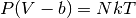
We can find out 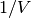, which is
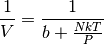
Now we can plot out 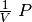 and it shows a behavior just like .
Note
To see the true nature of graphs, make quantities dimensionless. This is also true for theoretical derivations. Dimensionless equations can reveal more.
Behavior of Boltzmann factor.

Note
The nth derivative of this function is always 0 at x=0, for all finite n. Then how does it rise? The only thing I can say is that we are actually dealing with infinite n.
Professor Kenkre: sleeping lion
Specific Heat¶
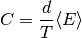
Check the behavior of specific heat,
- Is there a Discontinuity?
- Constant?
- Blow up?
- Converge?
Specific heat can be used for second order phase transition. An simple example of this is Landau theory.
Partition Function¶
For a given Hamiltonian H, the (classical) partition function Z is
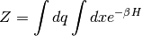
A simple example is the Harmonic Oscillator,
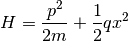
The partition function
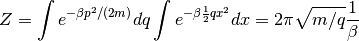
Energy
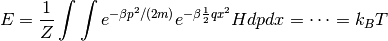
(This result is obvious if we think about equipartition theorem.)
A more clever approach for the energy is to take the derivative of partition function over  , which exactly is
, which exactly is
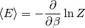
In our simple case,
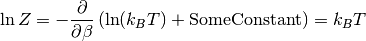
This is the power of partition function. To continue the SHO example, we find the specific heat is
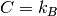
Note
This result has nothing to do with the detail of the SHO, no matter what mass they have, no matter what potential constant  they have, no matter what kind of initial state they have. All the characteristic quantities of SHO are irrelevant. Why? Mathematically, it’s because we have Gaussian integral here. But what is the physics behind this? Basicly this classical limit is a high temperature limit.
they have, no matter what kind of initial state they have. All the characteristic quantities of SHO are irrelevant. Why? Mathematically, it’s because we have Gaussian integral here. But what is the physics behind this? Basicly this classical limit is a high temperature limit.
Quantum Harmonic Oscillator¶
Quantum HO tells us the eigen energy
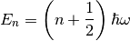
where 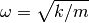.
Partition function
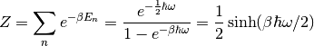
Energy
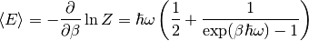
Specific heat
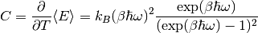
This specific heat behaves like this.

Though we have infinite energy levels, the specific heat won’t blow up because the probability of a high energy level state is very small.
Density of States¶
Note
Free energy
In another way,
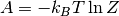
As long as we find out partition function, all thermodynamics quantities are solved, including entropy.
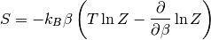
Specific heat is very different in 1D, 2D, 3D even for similar Hamiltonian. In the case of dipole systems, this is because for 1D, there discrete energy levels, for 2D and 3D energy levels fill up the gap. But what’s the difference between 2D and 3D? Obviously the degeneracies are different.
Generally,

where 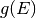 is the density of states.
Calculation of DoS¶
QM free particle in a 2D box.
In the momentum (wave number) space, all possible states are distributed on a grid.

How do we calculate the DoS? For a given E, we have 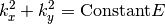. The # of states between 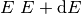 is just the area of it divided by the area of each grid box.
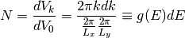
DoS is
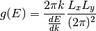
In the laguage of physics,
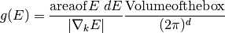
where  is the dimension of the system or box.
is the dimension of the system or box.
Gradient of energy gives us the spread out or dispersion.
To sum up, the quantities that determines the DoS are,
- 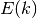
 : dimension
: dimension : volume of the box (important in QM because this sets the boundary conditions)
: volume of the box (important in QM because this sets the boundary conditions)
Examples of DoS¶
2D free particle in a box with length

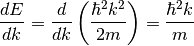
Thus we have,
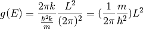
3D free particle in a box with length
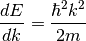
DoS
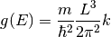
This is
 dependent.
dependent.1D
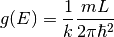
Note
These results are so different. For 1D system, the higher energy of the system is, the small DoS is. 2D DoS doesn’t depend on energy. 3D is proportional to the square root of energy.
DoS is very important in quantum systems because quantization can make strange DoS. In classical systems without quantization, DoS is always some kind of constant.
Partition Function and DoS¶
Thermal wavelength is defined as
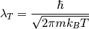
For 1 particle in 3D box,
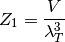
It’s obvious that for a N particles system without interaction between particles, 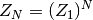. Free energy
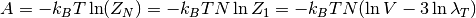
Note
This quantity is neither intensive nor extensive! If we combine two exactly same system, then we won’t have twice of the free energy. It’s called Gibbs mixing paradox.
{kind=link}